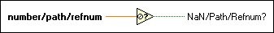

Not A Number/Path/Refnum? Function
Owning Palette: Comparison Functions
Requires: Base Development System
Returns TRUE if number/path/refnum is not a number (NaN), <Not a Path>, or not a refnum. Otherwise, this function returns FALSE.
Use this function to make sure a reference to an object, such as a VI, application, or control, still resides in system memory and was not closed.
The connector pane displays the default data types for this polymorphic function.

 Add to the block diagram Add to the block diagram |
 Find on the palette Find on the palette |